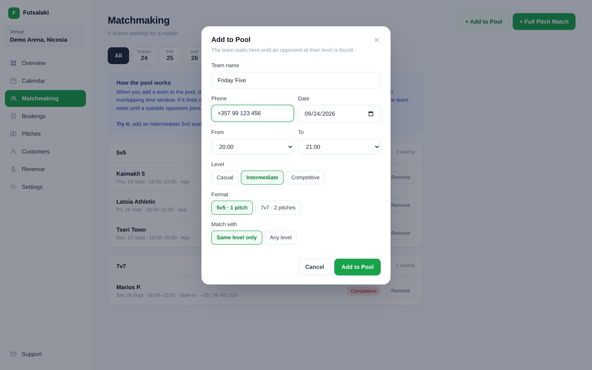
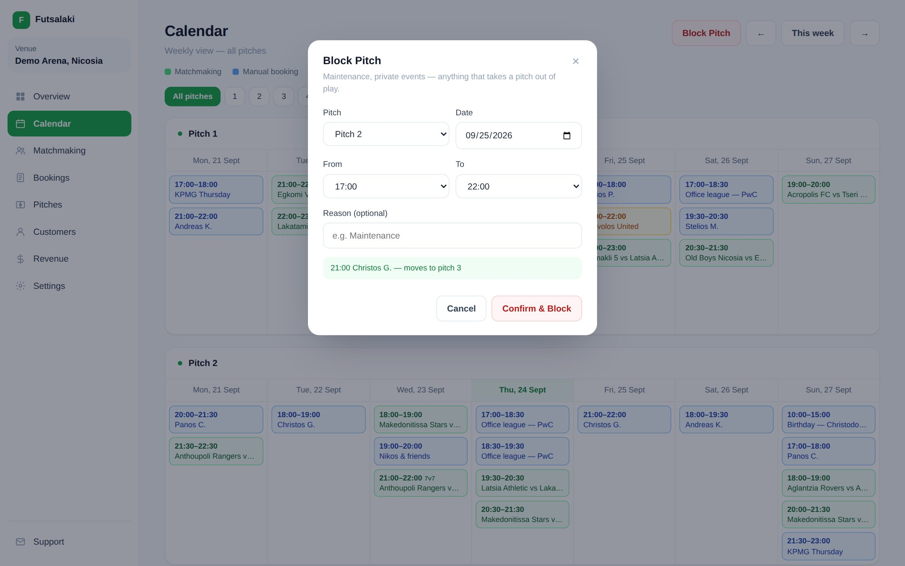
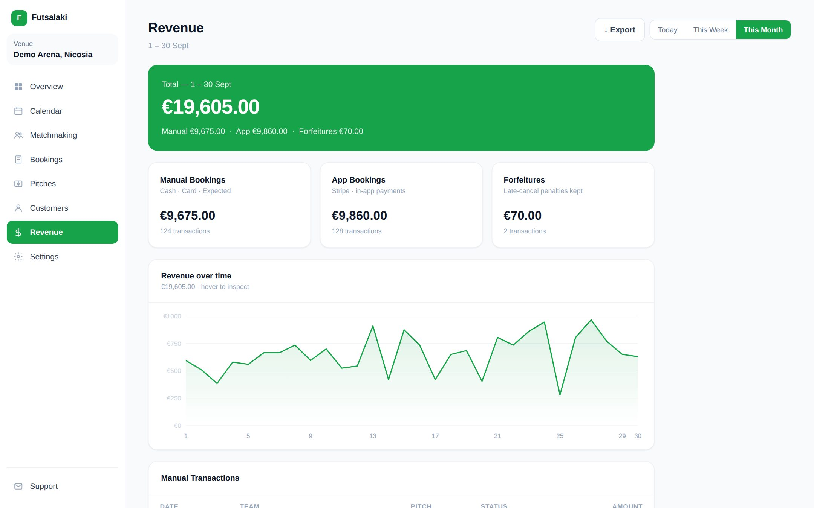
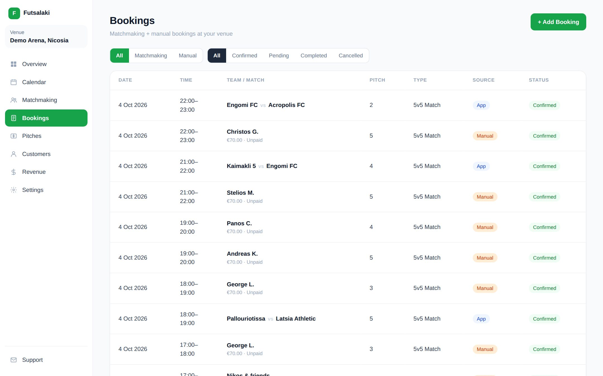
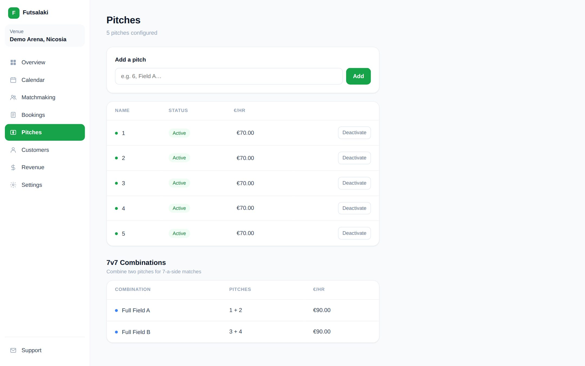

Case study 01
Futsalaki
Matchmaking and pitch booking for futsal in Cyprus — from “anyone free on Thursday?” to a confirmed, paid game.

The venue calendar. Green are matches made by the app, blue are the venue’s own bookings, yellow is a team still waiting for an opponent, red is a blocked pitch.
The problemHalf a team is not a game
Futsal in Cyprus runs on group chats. Someone books a pitch, then spends the week finding ten players — or a whole second team — and chasing everyone for their share.
Venues have the opposite problem: empty slots on weeknights, bookings taken over the phone and written on paper, and no-shows that cost them the hour. Both sides want the same thing, a full pitch at a time that works, but nothing connects them.
The productTwo apps, one pool
Futsalaki is two products that share a backend: an app for teams and a dashboard for the venues they play at.
For teams — iOS & Android
- Sign in with Google and create a team with a skill level
- Say when you want to play: a specific time or a flexible window
- Get matched with an opponent at your level and a pitch
- Pay your share in the app; refunds are automatic if the game is cancelled
For venues — web dashboard
- Weekly calendar per pitch, with walk-in and phone bookings alongside app matches
- The matchmaking pool, where staff can add walk-in teams too
- Pitches, prices and 7-a-side combinations of two pitches
- Revenue by source, CSV export, and payouts through Stripe


How it worksFrom a request to a game
- A team joins the pool
With a date, a time window, a format (5v5 on one pitch, 7v7 on two) and a level: casual, intermediate or competitive.
- The system looks for an opponent
Same day, same format, same level — or any level if the team allows it — and at least an hour where both windows overlap.
- A pitch is assigned
The first free pitch (or pitch pair for 7v7) inside the overlap, checked against existing bookings, blocks and opening hours.
- Both teams are confirmed and charged
Payment goes through Stripe and the venue is paid out automatically. If one team cancels, it is refunded and the other goes back into the pool.
My partMoney and reliability
A booking app is only as good as the moment someone’s card is charged. That is where I spent most of my time.
I worked on the payment flow on Stripe Connect — player payments, venue onboarding and payouts, automatic refunds, and forfeits kept on late cancellations — and on making the whole thing safe to put in front of paying customers.
Before launch I led an engineering review of the codebase and split the fixes into focused workstreams: database quick wins, column-level privileges, rate limiting, error monitoring, payment safety, a CI pipeline and performance.
Under the hoodStack and decisions
- Player app
- React Native with Expo; Android builds shipped to testers through EAS.
- Venue dashboard
- Next.js and TypeScript.
- Backend
- Supabase: Postgres, authentication with Google sign-in, and Edge Functions that receive Stripe webhooks.
- Payments
- Stripe Connect — venues onboard as connected accounts and receive payouts; refunds and forfeits are handled server-side.
- CI
- GitHub Actions on every push to staging: type checks, linting, dependency audit, and a secret scan with
gitleaks.




Screens from the interactive demo, which mirrors the real venue dashboard with sample data.
Try the venue dashboardAdd a team to the pool and watch it get matched, block a pitch, export revenue. Runs in your browser with sample data.
Next case study
SSSB Market